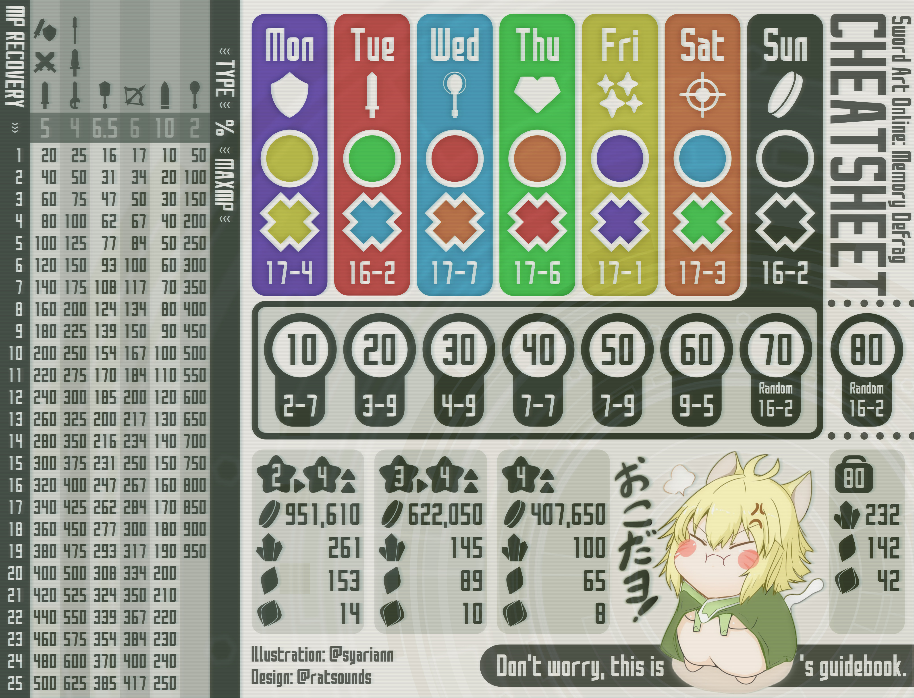

Twitterでの検索性向上の為にランイベ動画や攻略情報には上記ハッシュタグを使いましょう。動画投稿時は次のようなテンプレートがおすすめです（将来的にテンプレートに基づいた機械処理を考えています）。
#メモデフ #saomd #ranking event hashtagtime secchar infocomment
charinfo=char.lvgachanick★wep.lv+char.lv...
例えば下記のような感じです。キャラ名やガチャは後述するリストを参考にしてそろえると検索性が上がります。アドバイス希望の動画等も増えてきましたがその場合は#アドバイス希望とか付けても良いでしょう。
#メモデフ #saomd #おとぎランイベ前半 20秒
80Pユイ★4+100OSアスナ★5+100HRキリト★5
ユイちゃん可愛い
このWebサイトはソードアート・オンライン メモリー・デフラグの非公式ダメージ計算ツールです。ダメージ計算方法や一部のキャラクターパラメータは、 SAO（SAOMD）メモデフ攻略ヒントやSAO MD 4★ Databaseで有志によって収集されたデータを基に推定しています。
ボスのプリセットを選択してランキング確認。
| 防御 | |
| 全体攻撃バフの有無(YUI:1.275 ON:1.165 OFF:1.0) | |
| デバフの有無 | |
| ランキングアクセの有無 | |
| 称号による攻撃力アップ | |
| 弱点時ダメージ補正 | |
| 耐性時ダメージ補正 | |
| 赤Weak時ダメージ補正 | |
| ダメージ補正上限 | |
| 謎ダメージ補正 |
メモデフで敵に与えるダメージは次のような式で計算できる。なお実際のダメージは乱数によって10％のバラ付きがある。
ダメージ=(攻撃-防御)×倍率×補正
このとき攻撃は次のように決定される。
攻撃=(基礎攻撃力+SS)×(1+ΣBS)×バフ
基礎攻撃力=キャラ攻撃力+武器攻撃力
SS(スキルスロットの攻撃力Up効果)はステータス画面で確認できないが、基礎攻撃力へ加算後にBSやバフの効果が得られることに注意。
防御はボス毎に固有の値が設定されており、ランキングイベントでは1450であることが多い。デバフを考慮すると次のように計算できる。
防御=ボス防御×デバフ
倍率はスキルや通常攻撃毎に設定されている値。
最後にここまでで得た基礎ダメージ量に各種補正を乗算する。
補正=クリ×属性×武器種×ランイベアクセ
クリ(クリティカル時の補正倍率)は1.5が基本で一部のキャラはBSとして異なる補正倍率を持つ。
属性と武器種は敵キャラに設定された弱点や耐性から得られる補正倍率で、多くの場合は弱点が1.5、耐性が0.75である。 一部のソードスキルは武器の属性と異なるダメージタイプを持つので注意が必要。例：OSアスナのS3は斬属性、OSシノンのS3は魔法属性、VリーファのS3に至っては切り上げが斬属性でハートが魔法属性。
また、補正は上限がありクリx2である。
細剣や片手剣の通常攻撃1発目は倍率が0.5なので、補正=1のキャラで出るダメージから推定できる。実際のダメージは乱数によって10％のばらつきがある為、複数サンプルの最大値を取るか平均や中央値を0.95で除算すると誤差が減る。 厳密には 0<攻撃-防御<1の時、倍率1未満の通常攻撃はダメージ1になり、倍率1以上のスキルは1より大きいダメになる為、誤差なく防御を求める事ができる。
属性相性や武器相性の補正はボスによって異なり、測定したダメージの比率からクリティカル等の補正を除外した値で求められる。属性相性による補正と武器相性による補正が同時にかかる場合のロジックが不明確なので、属性相性、武器相性が1つだけ有効な場合と2つ同時に有効な場合にわけて測定する。
お試しゴブリンの防御=1450なので与えたダメージからスキルの倍率を推定できる。お試しでのキャラクターはlv80でBSおよびSSをすべて持つがソードスキルがレベル１である。なおソードスキルのレベル2は多くの場合レベル１の1.1倍の倍率、0.5倍のバフを持つ。
攻撃バフの効果はバフの有無における単純なダメージの比率で計算出来ないため、必ず既知の防御を持つ敵で測定しダメージ計算式に落とし込んで測定する必要がある。例えばS3が攻撃バフ付の場合、同じ敵に対しバフ有りと無しでS1やS2のダメージを測定し 倍率とバフを求める連立方程式を解く。

Thank you so much for all contributors on SAO（SAOMD）メモデフ攻略ヒント and SAO MD 4★ Database. The data for damage calculation is based on these great databases. I couldn’t have make this tool without your effort. Thank you again.
大丈夫、(' ω ' ミ)@ratsoundsの攻略本だよ。